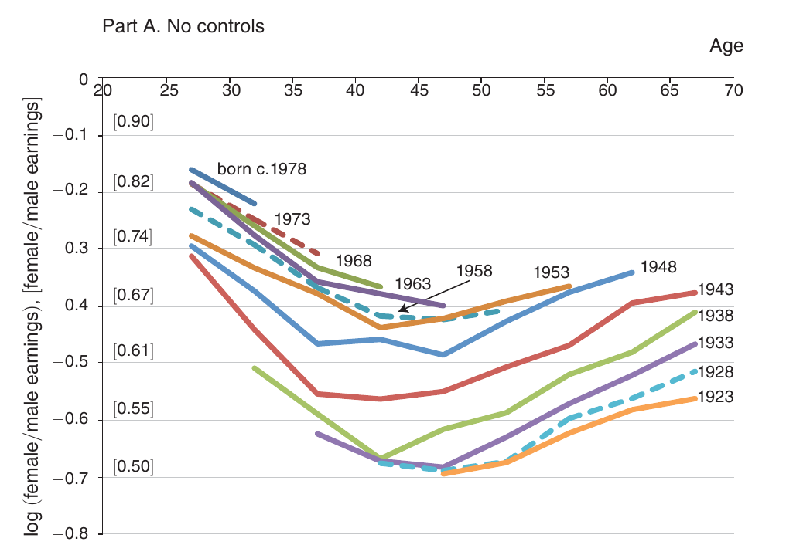
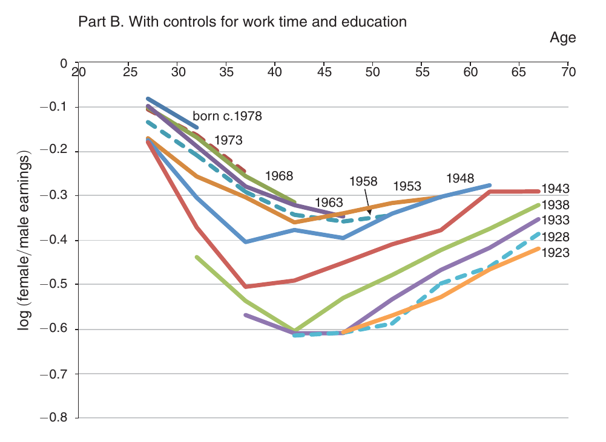
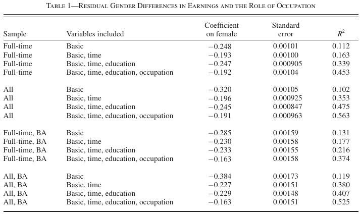
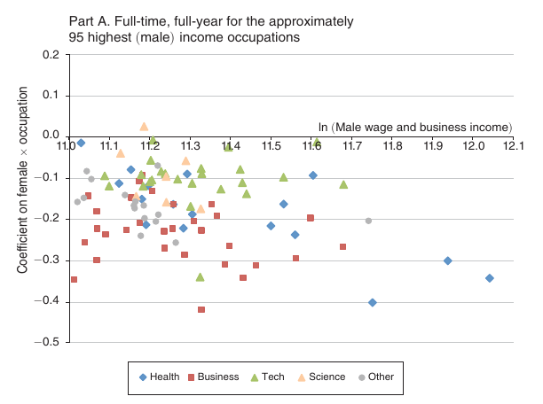
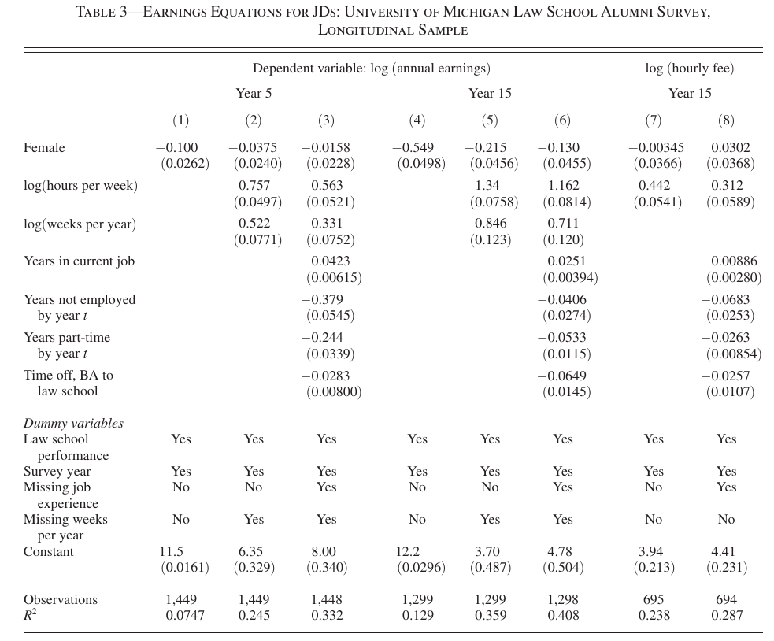

The Gender Gap
ECON 383: Economics of Discrimination
Winter 2018
Raw wage gap
- The median female earns 77 cents for every dollar the median man earns
- Controlling for observables (education, experience, occupation) shrinks the gap considerably
- Which observables explain the raw wage gap? What explains the "residual"?
Goldin (2014)
- /A Grand Gender Convergence: Its Last Chapter
The converging roles of men and women are among the grandest advances in society and the economy in the last century. These aspects of the grand gender convergence are figurative chapters in a history of gender roles. But what must the “last” chapter contain for there to be equality in the labor market?
Wage gap
Employment
Shrinking wage gap
- Women today are:
- More educated
- Working more
- Women today are more productive than in the past
- Gains in productivity higher for women then men, wage gap decreases
Life-cycle earnings
- Median and mean descriptive statistics consider all women who are currently working (cross-sectional observation)
- Wage gap changes considerably over a woman's lifetime
- Measure the wage gap by cohort: groups of women who are born within a certain time frame (5 years, beginning in 1923)


Increasing wage gap
Goldin:
The main conclusion from the aggregate earnings gender gaps is that the difference in earnings by sex greatly increases during the first several decades of working life
Occupational choice
- Men and women:
- Men and women sometimes choose to work in different industries
- Men and women also choose different jobs within an industry
- Men and women do the same jobs, but work different hours
- Most of the wage gap is determined by within industry differences, not between industry differences

Industry heterogeneity
- Within-industry wage gap is different across industries
- Some industries have lower gaps, some have higher gaps
- What do the industries with low (or high) wage gaps have in common?

Job characteristics
- Collect data on job characteristics ("work activities" and "work context")
- Compare industry groups by characteristics
- Time pressure: How often does this job require require the worker to meet strict deadlines?
- Contact with others: How much does this job require the worker to be in contact with others?
- Interpersonal relationships: Developing constructive and cooperative working relationships with others
- Structured work: To what extent is the job structured for the worker, rather than allowing the worker to determine tasks, priorities, deadlines?
- Freedom to make decisions: How much decision making freedom, without supervision, does the job offer?

Hours and output
- Some jobs can be done anywhere, anytime
- Output the same for any amount of time worked
- Expect hourly wages to be the same for part-time vs full-time
- Others require more consistent time commitments
- Output greater for people who work more
- Expect hourly wages to be greater for full time workers
Pharmacy vs Law
- Pharmacists tend to make the same amount regardless of how many hours they work (wages are linear in hours)
- Lawyers tend to make more if they work more hours (wages are nonlinear in hours)

Putting it all together
- Women have greater pressure than men to raise families
- Parenting requires flexibility, women self-select into jobs that allow for flexibility
- Jobs that allow time flexibility have low wage gaps, jobs without flexible hours have greater wage gaps